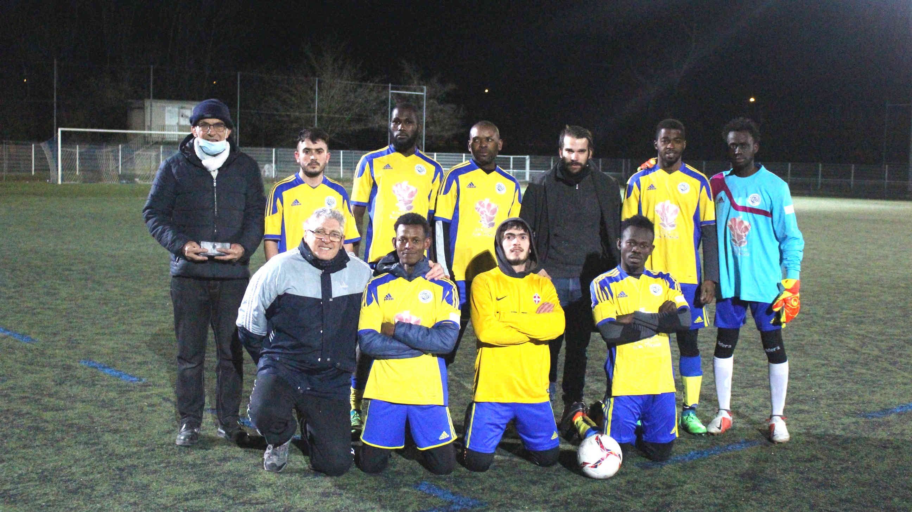

Section Foot réfugiés
Responsable : Christophe CASANOVA
06 63 23 97 41
christophe.casanova2007@gmail.com
Correspondant : Serge CARO
06 26 62 19 12
Lundi 20h-22h
VALENCE - gymnase Marcel Pagnol
à partir du mois de mai : football en extérieur (mêmes horaires)
VALENCE - stade de la Chamberlière (terrain annexe)
En 2022, le groupe a grandi avec 18 joueurs en provenance de Somalie, Syrie, Mali,
Afghanistan, Angola, Guinée, Sénégal, Algérie, Cote-Ivoire, et Sierra-Léone.
Un premier match a eu lieu contre l'équipe Pont Isère loisir joué à 11.
Un match nul équitable de 2-2, une belle perf pour le nouveau coach Christophe Casanova.
D'autres rencontres seront prévues en futsal en avril / mai avant de reprendre en extérieur sur les
terrains gazonnés de la Chamberlière.
GALERIE PHOTOS
Cette section a vu le jour en mars 2018 suite à une rencontre avec Claude Pettmann, président de l’AFP - Carrefour Cultures de Valence et Jean-Paul Taboyan, président de Sport et Foi- Agapé.
L’association Carrefour Cultures promeut des actions favorisant le contact entre les diverses cultures présentes sur notre territoire. Claude Pettmann souligne que beaucoup de jeunes réfugiés, fuyant les situations périlleuses de leur pays, demandent à pratiquer le sport.
Sous l’impulsion du Président de Sport et Foi – Agape, une équipe de bénévoles s’est greffée au projet, afin qu'il puisse se réaliser. Une vingtaine de jeunes en provenance d’Afghanistan, du Soudan, d’Erythrée et d’autres pays d’Afrique, composent l’équipe de football. Ils s’entrainent ponctuellement en extérieur ou dans un gymnase.
Des matches amicaux sont organisés ou bien des tournois et souvent ce sont des opportunités de faire connaitre nos besoins en logistique (Maillots, shorts, chaussures de futsal ou extérieur, chasubles, plots, ballons de futsal et extérieur)
Toute personne est la bienvenue pour nous aider : les besoins sont multiples ! Prenez contact avec le responsable, Christophe CASANOVA (voir plus haut), ou avec le président Jean-Paul TABOYAN, au 06 89 66 25 81.